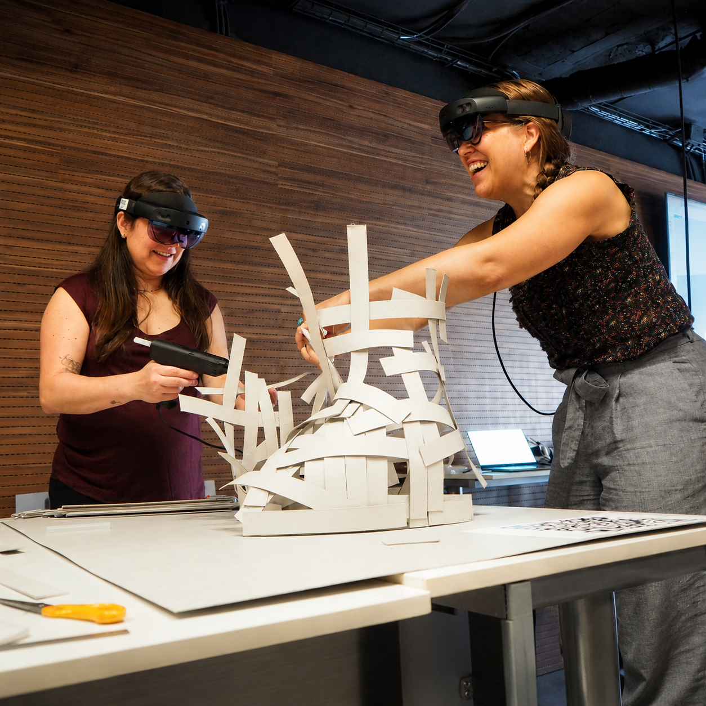

Add your image here'"/>The Fologram workshop was held in Barcelona, where we delved into how mixed reality (MR) can connect digital design with physical fabrication. By integrating Rhino and Grasshopper with the Fologram platform and Microsoft HoloLens 2, we gained insights into creating real-time interactions between virtual models and tangible construction.
Our collaborative exercise involved fabricating a full-scale paper strip sculpture, utilising holographic overlays as assembly guides. We operated two HoloLens headsets simultaneously, each presenting unique, colour-coded holograms. This setup allowed us to work together to deform and position strips accurately according to the digital model.
The process demanded that we synchronise our physical movements with virtual data, effectively translating complex 3D geometry into a precise, hands-on fabrication experience.
Beyond the workshop activities, the instructors showcased how this technology is utilised on actual construction sites to align digital models with real-world structures. By visualising digital data on-site, teams can identify and mitigate costly errors before they occur.
This experience significantly enhanced my understanding of real-time model-construction interoperability and highlighted the transformative capabilities of MR in improving precision, efficiency, and collaboration among designers, builders, and clients. It reinforced my conviction that augmented fabrication will play a vital role in sustainable, error-conscious architectural practices.